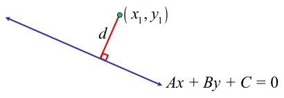
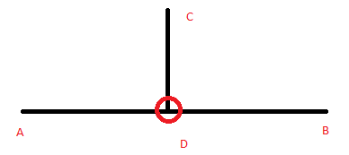
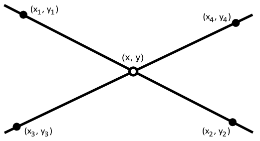
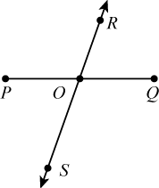
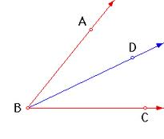

Uma linha num espaço 2D representa o conjunto de pontos que satisfaz uma equação linear da forma
$$ax + by + c = 0$$A classe Line que se segue assume que b=1, exceto para linhas verticais onde b=0.
Começamos pelos atributos e construtores:
class Line { public static final double EPSILON = 1e-7; public double a,b,c; public static boolean eq(double a, double b) { return abs(a-b) < EPSILON; } public Line(double a, double b, double c) { this.a = a; this.b = b; this.c = c; } // create line defined by two points public Line(Point p, Point q) { if (eq(p.x,q.x)) { // vertical line a = 1.0; b = 0.0; c = -p.x; // default values } else { a = -(p.y - q.y) / (p.x - q.x); b = 1.0; // we fix the value of b to 1.0 c = -a*p.x - p.y; } }
Os seguintes métodos validam propriedades entre pontos e linhas:
public boolean isColinear(Point p) { return distanceTo(p) < EPSILON; } public boolean isParallel(Line m) { return eq(a,m.a) && eq(b,m.b); } public boolean equals(Line m) { return isParallel(m) && eq(c,m.c); }
O método seguinte devolve a distância de um ponto a uma linha (vejam uma explicação aqui):

public double distanceTo(Point p) { return abs(a*p.x + b*p.y + c)/sqrt(a*a+b*b); }
Relacionado com o anterior, podemos devolver a projeção de um ponto sobre uma linha (info):

// the projection of p onto line public Point projection(Point p) { double d = -c - a*p.x - b*p.y; double z = 1/(a*a+b*b); return new Point(p.x + z*a*d,p.y + z*b*d); }
Com este método podemos criar outro que devolve a linha perpendicular à original que passa num ponto P. Basta encontrar a projeção do ponto P na linha, e criar a perpendicular com esses dois pontos:
// the line perpendicular to 'this', passing thru p public Line perpendicular(Point p) { return new Line(p, projection(p)); }
Outro método útil é encontrar o ponto que intersecta duas linhas:

Este problema pode ser modelado por um sistema de duas equações lineares (as equações das duas linhas) cuja solução devolve o ponto de intersecção (info).
// the point that intersects two lines (or null if parallel) public Point intersect(Line m) { if (isParallel(m)) return null; double px = (m.b * c - b * m.c) / (m.a * b - a * m.b); double py = b > EPSILON ? -(a * px + c) : -(m.a * px + m.c); return new Point(px,py); }
Um problema similar é determinar se dois segmentos de linha se intersectam. Aqui os segmentos são definidos pelos seus pontos extremos.
// does two segments intersect? public static boolean doSegmentsIntersect(Point a1, Point b1, Point a2, Point b2) { Point intersection = new Line(a1,b1).intersect(new Line(a2,b2)); if (intersection==null) return false; // they are parallel Point closest1 = intersection.closestToSegment(a1,b1), closest2 = intersection.closestToSegment(a2,b2); return closest1.equals(closest2); }
o método chama o seguinte método que devem incluir na classe Ponto:
// closest point from segment made by points a,b public Point closestToSegment(Point a, Point b) { Vector ap = new Vector(a,this), ab = new Vector(a,b); double u = ap.dot(ab) / ab.norm_sq(); if (u<0.0) return a; if (u>1.0) return b; return new Line(a,b).projection(this); // return the projection }
este método da classe Ponto devolve qual o ponto do segmento mais perto do nosso ponto. A ideia é definir um descrição paramétrica do segmento (usando a variável u) e calcular a projecção do ponto nessa descrição. Se a projecção ficar entre [0,1] então a projecção está dentro do segmento (e é ela que se encontra à menor distância). Para outros valores, o ponto do segmento mais perto é uma das extremidades.
O próximo método calcula o bisector de um segmento, ie, a linha perpendicular que corta o segmento ao meio.

Uma linha perpendicular tem como inclinação o negativo do recíproco da linha original. Eg, se a linha tem inclinação m, a perpendicular terá -1/m. De resto, basta usar o ponto que as intersecta (o ponto do meio) para calcular o resto da equação da perpendicular:
// the line perpendicular to the middle point of segment PQ public static Line bisector(Point p, Point q) { Line m = new Line(p,q); double midx = (p.x+q.x)/2, midy = (p.y+q.y)/2; if (m.a==0) return new Line(1.0,0.0,-midx); // horizontal line return new Line(-m.b/m.a, 1.0, -(m.a*midy - m.b*midx)/m.a); }
O método seguinte devolve a linha bisectora de um ângulo dado por três pontos:

// the line that bisects the angle made by points p2p1p3 (p1 is in the middle) public static Line angleBisector(Point p1, Point p2, Point p3) { double ratio = p1.distance(p2) / p1.distance(p3); Point p4 = new Vector(p2,p3).scale(ratio/(1+ratio)).translate(p2); return new Line(p1,p4); }
Podemos usar estes métodos para resolver alguns problemas. Experimentem os seguintes UVa's: